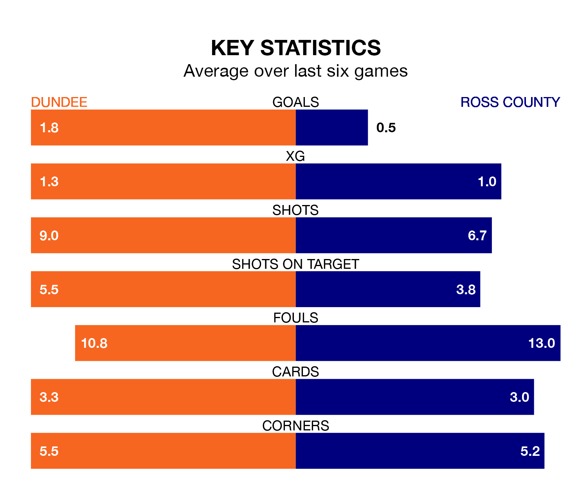

Ross County come to Kilmac Stadium at Dens Park to play Dundee on Saturday in terrible form, having collected just one point from their last six games.
The visitors have drawn just one of their last six fixtures, while the Dees have two wins and a draw.
Ross are 11th in the table after 24 games, of which they have won four and drawn seven, earning 19 points.
Dundee are five places ahead of County in sixth, with seven wins and eight draws putting them on 29 points.
With 20 goals in 24 games so far this season, the Staggies are the league's third-lowest scorers with 0.8 goals per game. And they are conceding more than average, letting in 41 goals at a rate of 1.7 per game.
The Dees, meanwhile, are above average scorers, with 1.4 goals per game, compared to a league average of 1.3. They have conceded 1.6 goals per game.
In the last 10 years, Dundee and Ross have played each other on 20 occasions. Dundee won six of them, Ross nine, and they drew five times.
On average, the Dees scored 1.4 goals and the Staggies 1.7 in those matches.
Their last meeting was on December 16, when Dundee won 1-0 away.
In Simon Murray, the away side have one of the league's sharpest shooters so far this season. He has notched seven goals in 24 appearances, to sit ninth in the scoring charts.
The hosts' top scorers, with five goals each, are Amadou Bakayoko and Luke McCowan.
Dundee's last match was on Sunday, a 2-1 win against St. Johnstone, with Jordan McGhee and McCowan getting the goals for the Dees.
Ross lost 3-1 against Rangers last time out, on Wednesday, with Murray on the scoresheet.
Updated: 12:06 (UTC), 15/02/24